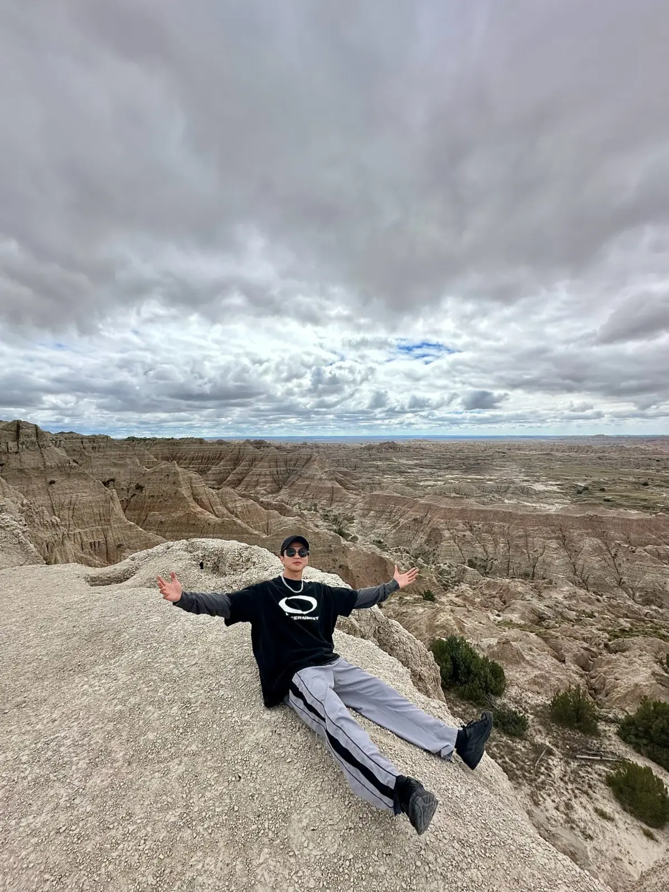
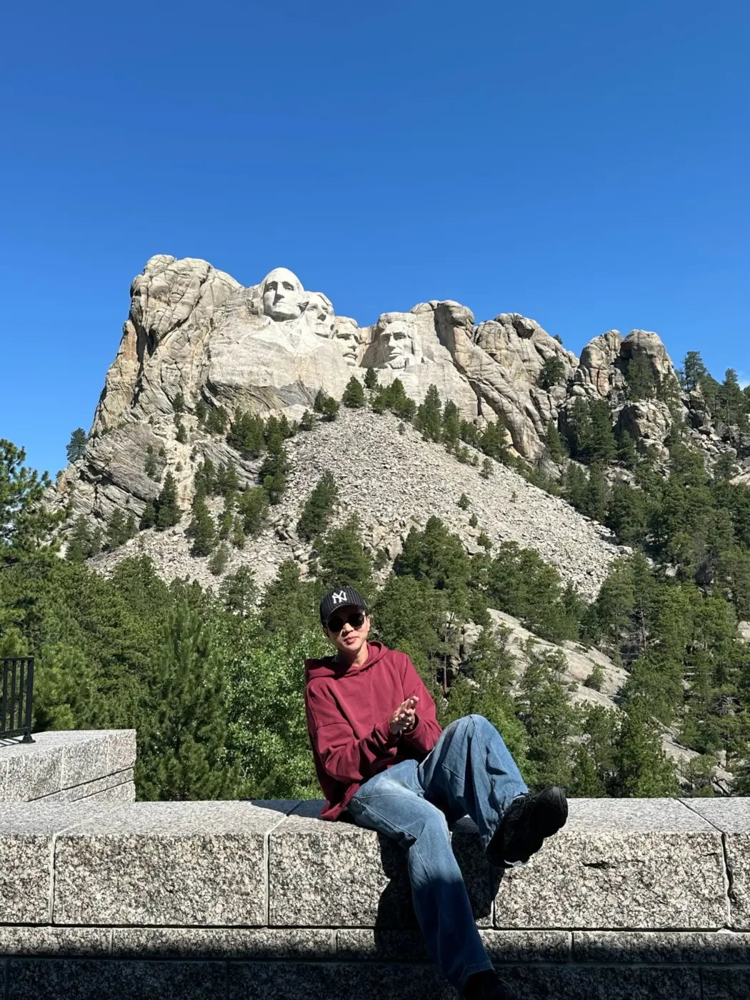
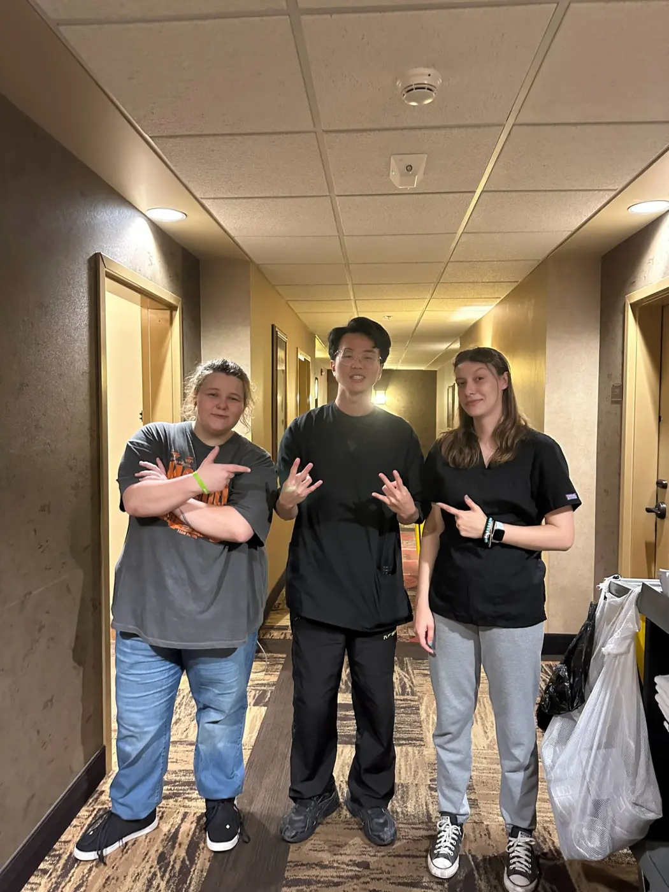
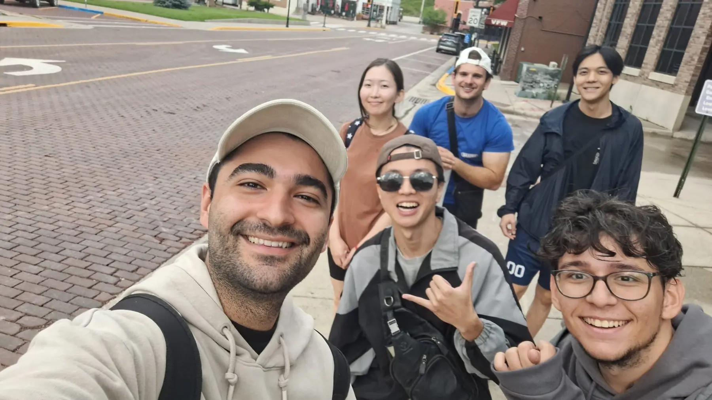
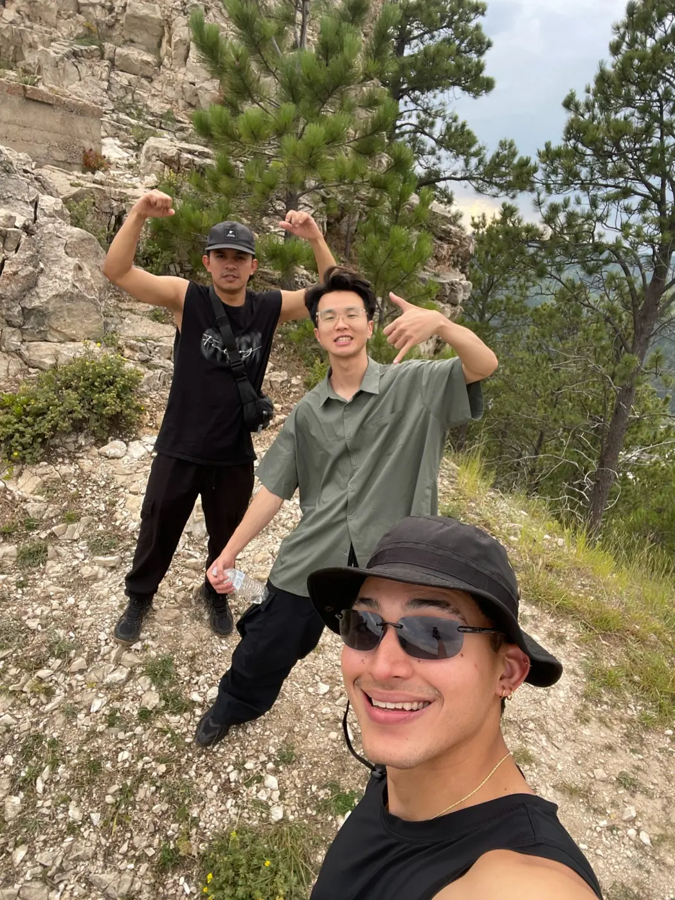

2021INFORMATION MANAGEMENT
I chose Information Management because I had always liked computers.
Then I met programming. I often knew what I wanted to make, but not how to turn that thought into code. Coding felt frustrating before it felt creative.
About — HongRong
/ 01 / ©I build across AI, web, and products. A lost first website taught me to create; South Dakota taught me to keep going.

02 — HOW I LEARNED
Then I met programming. I often knew what I wanted to make, but not how to turn that thought into code. Coding felt frustrating before it felt creative.
In my first web design class, I built a site that was mine. For the first time, code became something I could see, use, and feel proud of.
I did not back it up. The website is gone, so this space stays honest: no reconstructed screenshot, only the memory of making it.
THE TURNING POINT
Questions I did not know how to ask could finally be broken down step by step. AI gave me a way into the problem.
AI didn't replace thinking.
It helped me understand.
Requirements, data flow, logic, architecture, and the final decisions still remain my responsibility.
03 — USA / SOUTH DAKOTA
My English wasn't good.
That was exactly why I wanted to go.
The photos begin with the scale of South Dakota, then move closer—to work, the people who met me halfway, and the courage I brought home.





Small details made it obvious that I was far from home. I had to learn the rhythm of an unfamiliar culture instead of expecting it to feel comfortable.
The hardest part was not only the English. I did not know how to form the right question. With help from my employer, I completed the process.
Kaytlin patiently tried to understand me and corrected my English. Her kindness changed the experience, and I remain grateful for it.
I came home with
more courage.
04 — OUTSIDE THE SCREEN

After military service, I travelled to New Zealand with friends. Its scale and landscapes stayed with me. I especially like places that make a person feel small in the best way.
If there's a view worth remembering,
I probably want to be there.
I hope friends see a place worth exploring and think: “HongRong would love this.”
05 — HOW I BUILD
USED INSELECT A SKILL
The next chapter